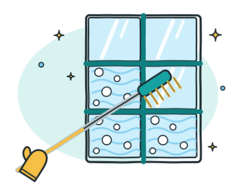

Window cleaning
Our core trade. Window cleaners for households and businesses, inside and out, by squeegee or with purified water for a streak-free finish and no limescale marks.
- Windows inside and out, including frames and sills
- Working at height with a water-fed pole — up to the third floor without scaffolding
- Conservatories, greenhouses, roof lights and glazed canopies
- Roller shutters, awnings and insect screens
- Shopfronts and display windows, including early morning before opening
- Scheduled maintenance: monthly, six-weekly or quarterly
Indicative domestic price: €55 – €115 per visit · all prices